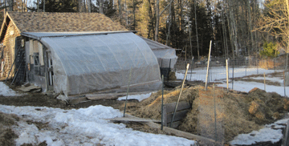

| My original winter housing included a sunken cold frame and access to a greenhouse. | ||||||||||||||||||
| Chicken Homes Chickens are hardy and grow thick warm feathers for the winter. At night, chickens need to be warm enough in their house so their combs, waddles and feet do not freeze. During very cold weather, a incandescent light bulb can be used for extra heat. |
||||||||||||||||||
| During the day, chickens can be inside or outside, or have access to a sunken cold frame or a greenhouse. In the fall, the greenhouse can be planted with greens that the chickens will eat when it gets colder. | ||||||||||||||||||
| At our new home in Maine, we built a chicken coop on the south side of a shed. | ||||||||||||||||||
| I keep renovating the original design to make it healthier for the chickens. Now, on the front are used glass storm windows, so there is more light. I can also open one of the bottom windows to let the chickens into the attached greenhouse during the winter. On the door and ends are 1/4” metal hardware cloth for ventilation and to keep predators out. As the weather gets colder, I put pieces of 1/8” plywood over the open screened areas to cut down the drafts. | ||||||||||||||||||
|  | ||||||||||||||||||
| Its fun to make areas for the chickens to scratch for food. During the winter, in front of the greenhouse, I put my barn residue; hay, straw and feces from the sheep. In the spring it is full, and has had the winter to begin composting. The bottom layer is full of red worms. I put up a perimeter chicken wire fence with netting above and then open the bottom plastic on the greenhouse. The chickens are safe and contained and have access to the outside pen, greenhouse or the chicken house to lay their eggs. | ||||||||||||||||||
| Chickens like to roost high. In the coop, they are four feet off the ground and roost on small tree trunks which provide a good size for chicken feet to grasp. Chickens need plenty of roosting area. | ||||||||||||||||||
| Underneath the roosts is a large floor area for them to move around during the day. | ||||||||||||||||||
| Floor litter can be wood shavings or sand. In warm weather chickens need a lot of ventilation, and in winter fresh air without drafts. High humidity and no fresh air can cause health problems Chickens need enough boxes to lay eggs. No matter how many laying boxes there are, the chickens will all want to lay in the same box! At first, I let the chickens in the sheep barn during the winter. I thought it was a good idea, but… After I saw chickens standing on the sheep keeping their feet warm and leaving their “calling cards” (poop) on their fleeces, and then scratching in the straw bedding, throwing it all over the resting sheep… NO more chickens in the barn! |
||||||||||||||||||